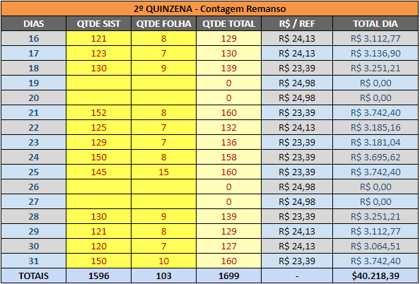

O rateio da It's Cool é feito com base na nossa planilha do drive que faz o rateio de forma automática
A primeira coisa a ser feita nela é o preenchimento da coluna "QTDE SIST" com as quantidades diárias de alimentação com base no relatório que recebemos pelo email da Administração

Ainda não sei
São encaminhados emails na caixa delegada da Administração com a planilha de rateio, alteramos a alocação das despesas com base nas informações contidas nelas
Ambos são modificados com base no uso do serviço de cartório por cada setor e as despesas são alocadas para os mesmos, sempre que chegar algum comprovante verificar quem utilizou o serviço para o lançamento futuro
Apesar destes lançamentos serem alterados os rateis com base nas viagens feitas durante o mês, quem lança estas despesas são as meninas do seotr de Viagens